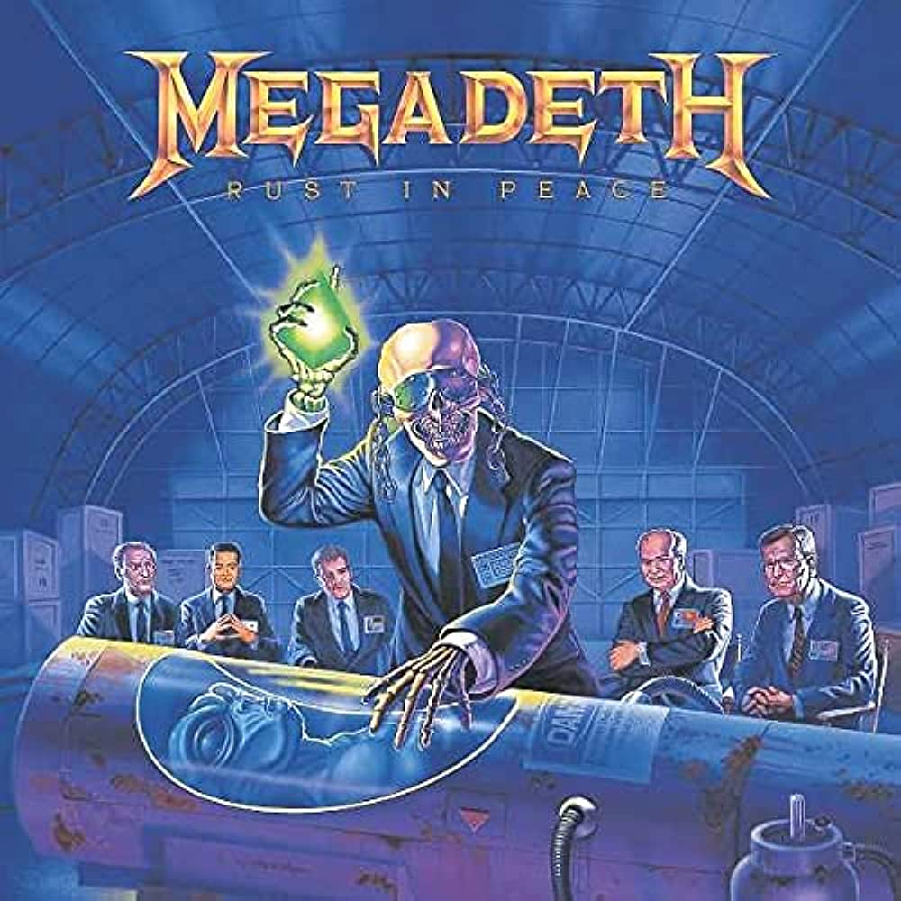
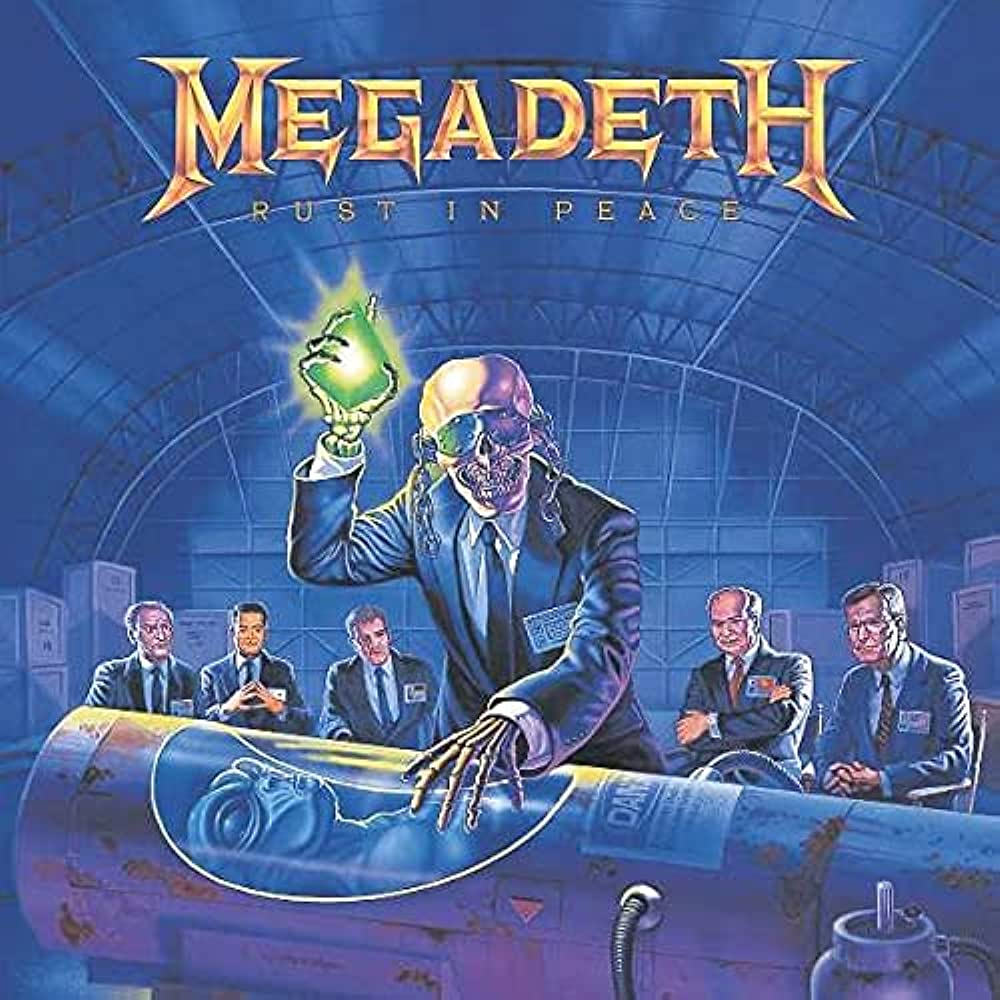

El
thrash metal es un subgénero más agresivo del heavy metal tradicional
que se caracteriza específicamente por sus ritmos pesados similares al
metal extremo, NWOBHM, speed metal, y hardcore punk en agresividad y
contundencia.


 

MEGADETH
Megadeth es un grupo musical
estadounidense de thrash metal, formado en Los Ángeles, California. Fue
creada en 1983 por Dave Mustaine, después de que fuera expulsado de
Metallica, donde ocupaba el puesto de guitarrista principal.
REVISTA TRASHER
Thrasher
es una Revista de skate mensual fundada en 1981 por Eric Swenson y
Fausto Vitello. Esta revista publica artículos, entrevistas con
patinadores profesionales y noticias de grupos musicales, revisiones de
skateparks y singularidades mixtas.
METALLICA
Metallica
es un grupo estadounidense de thrash metal originario de Los Ángeles,
pero con base en San Francisco desde febrero de 1983. Fue fundado en
1981 en Los Ángeles por Lars Ulrich y James Hetfield, a los que se les
unirían Dave Mustaine y Ron McGovney.